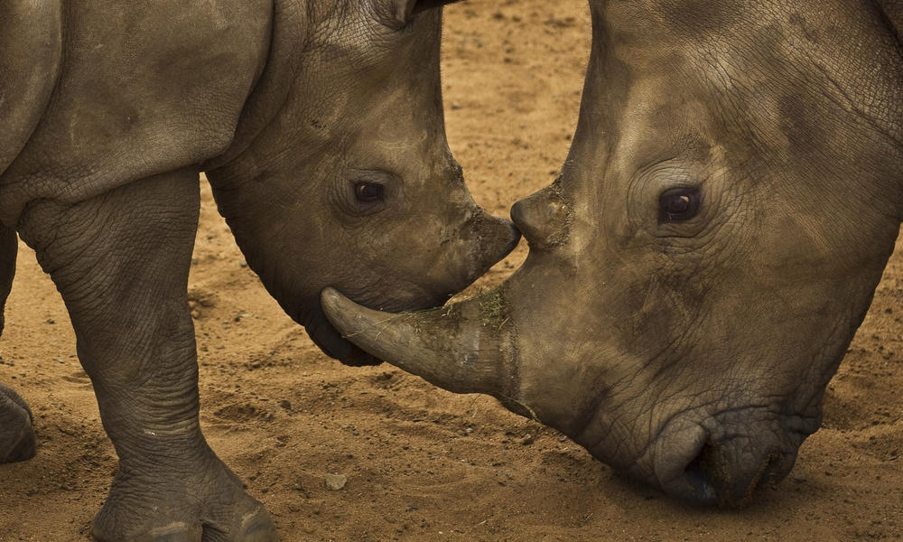

Rhinoceros
-
World Wildlife Organization
-
Donate
-
Population: approximately 27,000
-
Length: 4-10 ft
-
Habitat: Tropical and subtropical grasslands, savannahs and shrublands, tropical moist forests, deserts and shrublands
-
Species: Black Rhino, Greater One One-Horned Rhino, Javan Rhino, Sumatran Rhino, White Rhino
In the beginning of the 20th century, 500,000 rhinos roamed Africa and Asia. By 1970
numbers dropped to 70,000, and today only around 27,000 remain in the wild. Persistent
poaching and habitat loss are the biggest hurdles faced by the surviving population of
Rhinoceros.
African Rhinoceros are important to the ecosystem because they are grazers and help
shape the landscape. It keeps a healthy balance within the ecosystem. They help the
African economy as one of the biggest sights for tourists, as ecotourism is an important
source of income for locals.
The biggest threat facing African rhinos is poaching. Poaching is "the illegal practice
of trespassing on another's property to hunt or steal game without the landowner's
permission." Rhinos are poacheed for their horns which is ground up and used in
traditional Asian medicine, and touted as a "cure" for a variety of illnesses from hangovers to fevers
to even cancer. A surge in poaching has been driven by a demand in Vietnam, as it is not only used
as a medicine but it is bought and consumed as a symbol of wealth.
Conservationists needs to match the level of technology used by poachers, who utilize technology such as
helicoptors and night vision equipment, to tackle the problem of the endangerment of the
rhinos.